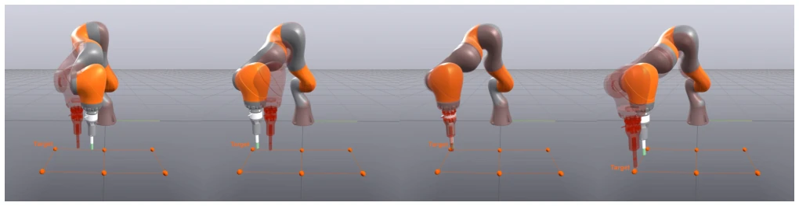
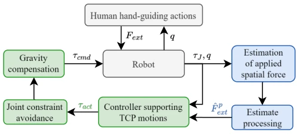
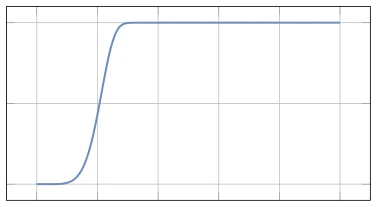
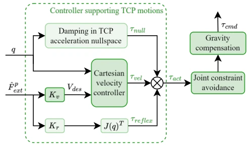
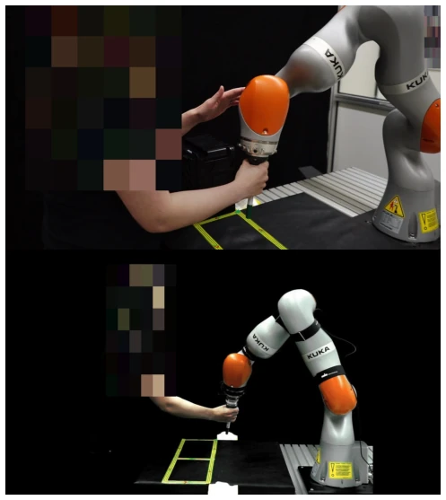
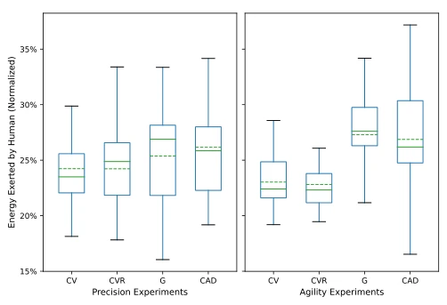

This paper offers a potent remedy for the perennial pain point of "hand-guided teaching": stop compromising with passive damping; go straight for active support! The authors did not spend a fortune on wrist torque sensors but relied on algorithms to tackle it head-on, using an observer to estimate external forces to "push" the robot along. This approach is indeed clever, saving hardware costs and making the operator feel as if the robot has "muscle memory" cooperating with you. However, this model-dependent estimation method tends to become "unreliable" near singularities; although the authors added a confidence mechanism to mitigate the issue, the risk of inaccurate models remains. Additionally, although experimental results significantly reduced energy consumption, there was no overwhelming advantage in task completion quality, indicating that "saving effort" does not equal "being more accurate". Overall, this is a thrilling tightrope walk between cost and performance, but it is still far from true "foolproof" teaching, after all, no matter how excellent the algorithm is, it fears model parameters being miscalibrated.
In imitation learning and demonstration programming, collecting data through robot hand-guiding (Kinesthetic Teaching) is the most intuitive method to obtain large-scale demonstration sets. However, existing industrial hand-guiding modes mainly rely on gravity compensation and passive impedance control; operators must overcome the robot's inertia to start and guide motion, leading to extreme fatigue during prolonged operation, severely limiting the scale and quality of data collection [3]. Although some studies introduced wrist force-torque (FT) sensors for assistance, this not only increases hardware costs but also makes large-scale deployment expensive [10]. Furthermore, general impedance control architectures based on passivity assumptions treat humans as passive environments, actually ignoring the fact that humans are active controllers, resulting in conservative control, limiting the range of demonstrable motions, and even failing to provide expected stability guarantees [4]. Existing sensorless methods are mostly used for friction compensation or collision detection, and have not yet achieved active motion support targeting operator intent in a closed loop [19]. Therefore, there is an urgent need for a control scheme that requires no additional hardware, can actively support human intent, and adapts to human motion bandwidth.

Fig. 1: Visualization of the proposed active support during a hand-guiding experiment (see supplementary video). The transparent robot shadow shows the effect of the supportive torque action by displaying a proxy of the velocity setpoint (10) mapped to robot joint space. The shadow intuitively reveals how the observer- based processing pipeline translates operator-applied forces into responsive motion support — assisting both acceleration and deceleration phases without noticeable artifacts from modelling inaccuracies or estimation delays.
The paper proposes the RHOAS (Observer-based Active Support Hand-guiding) framework, the core of which lies in viewing hand-guiding as active interaction between human and robot, rather than a passive environment. The overall process is divided into three steps: first, using a Momentum Observer combined with joint torque sensors and position information to estimate externally applied spatial forces, without needing a wrist FT sensor [15]. Second, a control-oriented estimation post-processing pipeline is designed: 1) Limiting estimation bandwidth through a 5Hz low-pass filter to match human control frequencies within 2Hz, suppressing unmodeled joint elastic dynamics; 2) Introducing a confidence factor based on the minimum singular value of the Jacobian matrix to automatically reduce support force when approaching kinematic singularities, smoothly transitioning to pure gravity compensation mode to ensure safety; 3) Eliminating the component in the gravity direction through orthogonal projection to eliminate estimation bias caused by gravity compensation errors. Finally, construct an active control architecture: map the processed force to desired Cartesian velocity, generate joint torques through a velocity controller, and introduce a "Reflex" mechanism to directly enhance response to force, while utilizing redundant degrees of freedom to inject damping in the null space to improve robustness.

Fig. 2: Overview of the proposed control scheme. To ini- tiate desired robot motion, the operator applies forces that are estimated (Sec. II-B) based on the measurement of joint position and joint elastic torque. This informa- tion is postprocessed (Sec. III-A) and utilized to actively support the intended movement (Sec. III-B).

Fig. 3: Confidence function for σ = 0.11, selected in the experiments. The function values close to zero λmin scale down the estimate magnitude and thereby transi- tion from the active support to pure zero-gravity mode.

Fig. 4: Proposed hand-guiding control architecture (7). At the core is the Cartesian velocity controller (Sec. III- B.1), actively supporting TCP motion by controlling the spatial velocity to desired value, proportional to the estimated external forces. It can be extended with reflex action (Sec. III-B.2), and with nullspace task for redundant robots (Sec. III-C). Additionally repulsive torques [25] are added for avoiding joint constraints and gravity torques are compensated by the built-in low-level controller (8).
User experiments were conducted on a KUKA LWR iiwa (7 degrees of freedom), recruiting 16 participants with different backgrounds. The experimental design includes two extreme scenarios: high-precision path tracking (Precision) and agile rapid movement (Agility, 45 bpm beat). Four methods were compared: the proposed CV (no reflex) and CVR (with reflex) controllers, as well as baseline G (pure gravity compensation) and CAD (estimation-based adaptive damping). Evaluation metrics include normalized energy consumption, user preference ranking, and task quality (path deviation/beats lost). Results show that the RHOAS scheme (CV/CVR) is significantly lower in energy consumption than the baseline (p < 10^-4), and user preference is also significantly higher (p < 10^-5), especially in agile tasks where operators can complete fast actions more easily. Although the improvement in task completion quality (such as number of beats lost) did not reach statistical significance, the trend is positive. Ablation studies indicate that introducing the reflex mechanism (CVR) performs better in agile tasks, while CV has a slight advantage in precision tasks.

Fig. 5: Setup of precision and agility experiments. On the top is the precision experiment, where the user is guiding the robot to follow a reference path and adjusting the body with the other hand. On the bottom is the agility experiment, showcasing fast, repetitive movement with a pacer between target boxes.

Fig. 6: Distribution of normalized exerted human en- ergy values. Both the CV and CVR controllers show im- provement over the baselines, especially in the agility experiment. Data distribution is depicted with the quartiles and data range as solid lines and the mean value as green dashed line.